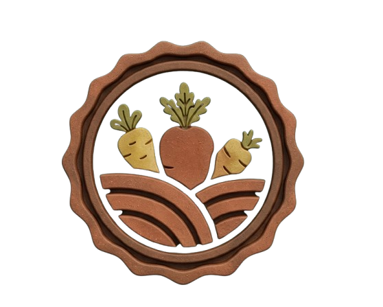
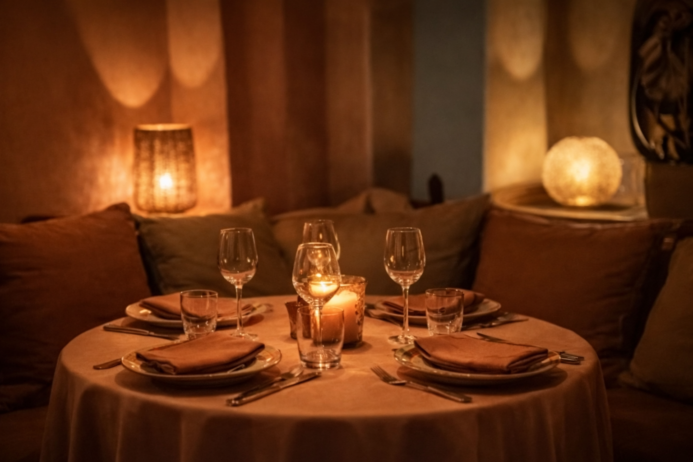
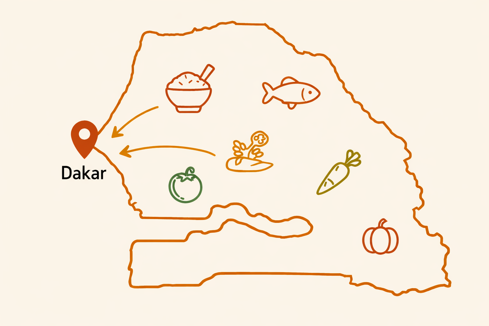

A PROPOS DE TERANGA FOOD
L'art de la cuisine sénégaliaise, servi avec passion.
Notre Histoire
Teranga Food est née d’une profonde passion pour la cuisine sénégalaise et du désir de partager ses saveurs authentiques. Inspirés par la richesse du patrimoine culinaire local, nous avons créé un espace où chaque plat raconte une histoire, celle des traditions et du savoir-faire transmis de génération en génération. Notre objectif est de faire découvrir des recettes emblématiques, préparées avec soin à partir d’ingrédients locaux de qualité. Teranga Food, c’est avant tout une invitation au voyage culinaire au cœur du Sénégal..
Aujourd’hui, Teranga Food offre une expérience culinaire où tradition et modernité se rencontrent harmonieusement. Nous préservons l’authenticité des plats tout en y apportant une touche contemporaine, afin de satisfaire tous les palais. Notre ambition est de faire rayonner la teranga, cet esprit d’hospitalité sénégalais, à travers chaque assiette, tout en valorisant les producteurs locaux et en créant un lieu chaleureux et convivial. Demain, nous souhaitons faire grandir Teranga Food et partager cette richesse culinaire au-delà des frontières.
Nos Valeurs

Hygiène
Nous sélectionnons des ingrédients frais et locaux pour garantir des plats savoureux et soignés.
Qualité
Nous accordons une importance primordiale à l’hygiène dans toutes nos préparation
hospitalité
Nous accueillons chaque client avec chaleur, respect et générosité, comme le veut la tradition sénégalaise.
Tradition
Nous privilégions les circuits courts, en valorisant des produits locaux et authentiques.
Presentation de l'Equipe
Notre équipe est composée de professionnels passionnés : un chef cuisinier spécialisé dans les plats traditionnels, des aides en cuisine, du personnel de service attentif, un service livraison. Sans oublie notre équipe de gestion dédiée à votre satisfaction. Ensemble, nous travaillons avec rigueur pour vous offrir une expérience de qualité.
Ambiance du restaurant

Chaleureuse & Accueillante
Chez Teranga Food, nous vous accueillons avec sourire et convivialité dans une ambiance chaleureuse inspirée de la teranga sénégalaise. Ici, vous vous sentez comme chez vous et chaque repas devient un moment de partage et de plaisir.
Moments de Partage
Nous créons des moments uniques autour de la table, où famille et amis partagent des plats savoureux. Chez Teranga Food, chaque repas est un moment de convivialité et de partage dans une ambiance chaleureuse et authentique.

Engagement locaux

Produits locaux & authenticité
Nous privilégions des ingrédients frais issus de producteurs locaux afin de garantir des plats authentiques. Nos recettes respectent les traditions culinaires sénégalaises pour vous offrir des saveurs naturelles et un goût fidèle à notre culture.
:Terange-Food-Sn
Adresse
Point E
Horaires d'ouverture
Lundi-Dimanche:9h-22h
Contact
+277 77 663 84 77
Teranga@gmail.com